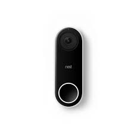

No stressful countdowns, loud beeps, or rushing out the door.
One sensor can sense two things.
Always know what’s happening at home.
Most security systems are designed around intruders. But you’re not an intruder. Nest Secure is easy to live with. And it’s only tough when you need it to be.
You can arm and disarm with the Nest app from anywhere. Tap Nest Tag on Nest Guard as you come and go. Or just ask your Google Assistant to arm for you.
Give Nest Tag to family or people you trust. Set a schedule to let someone in at certain times, like your dog walker. And don’t worry if you lose one. You can easily disable it in the Nest app.

No stressful countdowns, loud beeps, or rushing out the door.
You can choose how much time you need to arm or disarm before the alarm goes off – up to 5 minutes. For doors you use most, you might give yourself more time. For doors you hardly use, you can set No Delay so the alarm goes off instantly when it opens. And if you forget to arm, you’ll get a Remind Me alert on your phone.